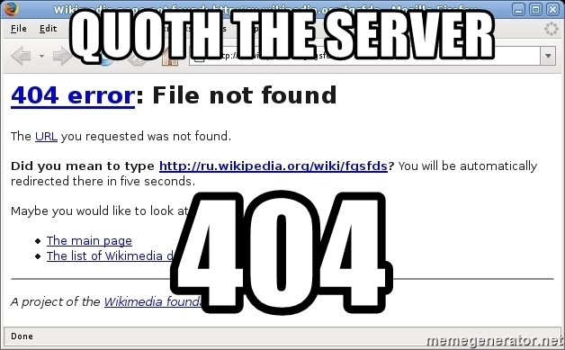

Ryan Stipe
404 Poem
Parody of Edgar Allan Poe by Ryan Stipe, original idea inspired by various reddit posts

Once upon a midnight dreary, While I studied, weak and weary, Over many a strange and curious website of how-to's and forums mixed.
While I clicked my homework, Suddenly there came a warning, And my heart was filled with mourning, Mourning for my dear grades, never fixed.
'Tis not possible!', I pleaded, But my browser, so conceited, Remained blank, I then repeated, Just a blank and nothing more.
With a scream, I was defeated, For my grades were depleted. As I searched the FAQs, and the unknown regions. In search I was for, the secret to my score.
Then, in answer to my query, Through the net I loved so dearly, Came its answer, dark and dreary: Quoth the server, 404